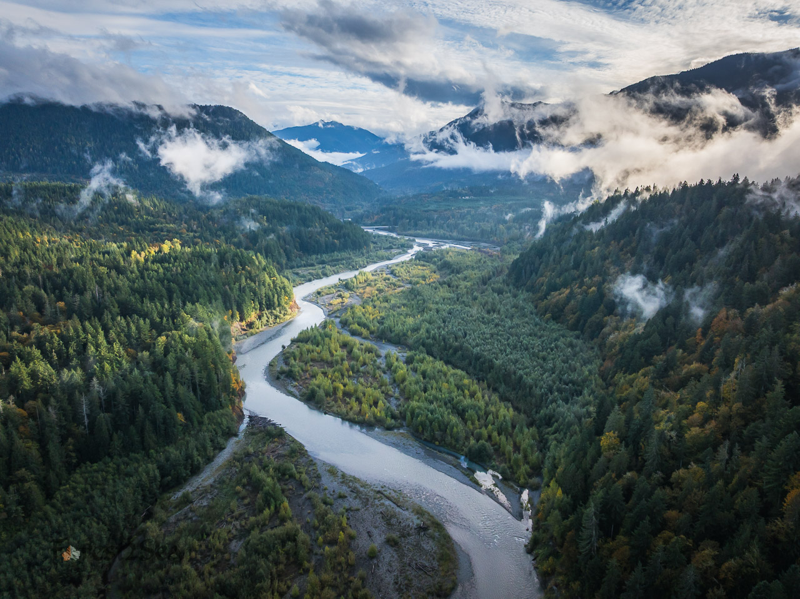

Elwha River Watershed
3 Steps to Take Right Now!
1) Learn More
The Elwha River Watershed covers 300 square miles and contains rivers that flow from the Olympic Mountains to the Strait of Juan de Fuca. This Watershed is of critical ecological importance as a temperate rainforest with high biodiversity of plants and animals, old-growth and legacy forests, is of cultural significance to the Lower Elwha Klallam Tribe and S’Klallam people, and is the sole water source for residents and businesses of Port Angeles, WA, equaling 25% of Clallam County’s population.
With the removal of the 2 dams on the Elwha River, there’s over a $320 million dollar effort to restore the Elwha Watershed. This includes work to restore salmon access to the Little River, Indian Creek, Lake Sutherland, and other tributaries. Counter to these restoration efforts, clearcut logging still takes place in the watershed.

2) Sign the Petition
Join us in calling on Commissioner Upthegrove and DNR to take a landscape-level approach and recommend a Natural Area that fully reflects the extraordinary ecological and public value of the Elwha Watershed.
Protecting these lands would help safeguard clean water, salmon habitat, biodiversity, cultural resources, recreation, and the ecological connections that extend from the Elwha’s forests to the Salish Sea. Recovering Elwha salmon are also important to the recovery of endangered Southern Resident orcas, making the watershed’s continued recovery significant beyond the river itself.
Sign the petition today and help protect the Elwha for generations to come.
3) Read the Report and Share This Information
Watershed Health Threatened by Clearcut Logging
In 2022, the Elwha Legacy Forests Coalition formed after learning that the Washington State Department of Natural Resources (DNR) had been targeting some of the last remaining legacy forests in the Elwha River Watershed for clear-cut (aka VRH) logging.
Zoom in on the interactive Google Map to see where the DNR plans to log legacy forests in the Elwha River Watershed. Each color represents a different legacy forest timber sale and the large blue outline is the Elwha River Watershed.
The Elwha Watershed Study
Since that time, we have worked hard to stop timber sales and advocate for responsible stewardship of the watershed. It’s time for the DNR to do its part in protecting and restoring the watershed. In 2025, we made big progress! The WA State Legislature gave DNR $250,000 to conduct an analysis of the ecological and conservation values of the Elwha watershed on state-owned lands managed by DNR. This gives us a chance to protect the last remaining legacy forests and reimagine stewardship on a watershed scale.
DNR’s study process culminates in a report to the WA state legislature (due Oct. 1, 2026). The report includes recommendations as to what should be included in the new conservation area and public comments gathered through DNR’s Elwha Watershed public survey form.
Specifically, the report includes:
- A Washington Natural Heritage Program site survey to identify rare flora, native ecological communities
- Locations of structurally complex forests
- Scenic or other natural features worthy of consideration for conservation
- Current uses, including recreation and cultural practices
- Identification of lands appropriate for NAP or NRCA conservation
The values protected by natural areas can range from maintaining critical habitat to enhancing primitive recreation to fostering outdoor environmental education.
Report: Elwha Watershed Protection: A Call for State Stewardship

Download the Elwha Watershed Protection Report by clicking on the cover image above.
Earth Economics, Earth Law Center, and Center for Responsible Forestry have released a 65 page report — Elwha Watershed Protection: A Call for State Stewardship — complete with maps and photos of some of the most scenic, beloved, and ecologically significant areas. The report asks the WA Department of Natural Resources to take an ecocentric approach to stewarding the watershed, including by protecting the last 800 acres of its oldest forests. A new conservation area will enhance recreational experiences, advance tribal citizens’ rights to gather native plants, and help safeguard water supplies for the well-being of local residents, endangered salmon, and orcas.
Recommendations:
- Designate the Mt. Sutherland area as a Natural Area Preserve (NAP) due to its concentration of rare species, rare ecological communities, exceptional natural features, and high-quality habitat.
- Establish an Elwha Watershed Natural Resources Conservation Area (NRCA) in the Elwha Watershed encompassing the remaining priority study areas within the Dan Kelly Peak and Indian Creek, Dry Hill, Little River, and the Elwha River Mouth and Estuary Zones.
- Utilize existing revenue replacement mechanisms, including Trust Land Transfer and Natural Climate Solutions funding, to address trust beneficiary needs while conserving high-value lands.
- Continue targeted data collection and field surveys in less-studied areas to support future boundary refinement and management decisions.
References
Resources
- Earth Law Center press release: Washington state budget secures critical funding to protect the Elwha watershed
- DNR Elwha Watershed Study
- DNR fact sheet (PDF)
- Video: The Story of the Elwha Legacy Forests Coalition, by Scott McGee
- Video: Last Stand: Saving the Elwha River’s Legacy Forests
Organizational Partners
All images are ©Forest2Sea unless otherwise noted.